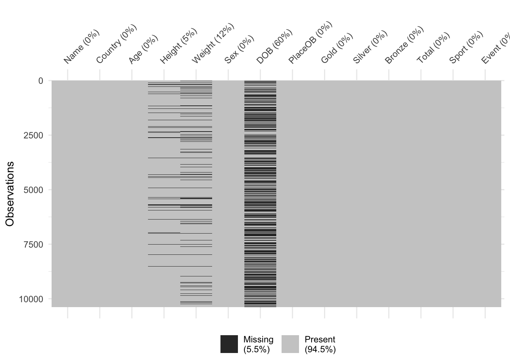

Missing values in data sets can pose problems as many statistical methods require a complete set of data. Small numbers of missing values can often just be ignored, if the same is large enough. In other cases, the missing values can be replaced or estimated (“imputed”). Data can be missing for many reasons:
It wasn’t recorded, there was an error, it was lost or incorrectly transcribed
The value didn’t fit into one of the pre-defined categories
In a survey, the answer was “don’t know” or the interviewee didn’t answer
The individual item/person could not be found
And many others!
A key question is often whether the data values are missing purely by chance, or whether the “missingness” is related to some other aspect of the problem is also important. For example, in a medical trial a patient could be too unwell to attend an appointment and so some of their data will be missing. However, if their absence is due to their treatment or the trial then the absence of these values is actually informative as the patient is adversely affected, even though we don’t have the numbers to go with it.
While we won’t go into much depth on missing data analysis (this is a subject of its own), we will look at some mechanisms to visualise missing data and to help us detect patterns or features.
First, we can make some simple overview plots of the occurrence of missing values in the data. To do this, let’s revisit the data on the Olympic athletes. If we look at the first few rows of data, we note that the symbol NA appears where we might expect data. This indicates that the value is missing.
library(VGAMdata)
Loading required package: VGAM
Loading required package: stats4
Loading required package: splines
Attaching package: 'VGAMdata'
The following objects are masked from 'package:VGAM':
dlaplace, dtriangle, laplace, plaplace, ptriangle, qlaplace,
qtriangle, rlaplace, rtriangle
data(oly12)head(oly12)[,1:7]
Name Country Age Height Weight Sex DOB
1 Lamusi A People's Republic of China 23 1.70 60 M 1989-02-06
2 A G Kruger United States of America 33 1.93 125 M <NA>
3 Jamale Aarrass France 30 1.87 76 M <NA>
4 Abdelhak Aatakni Morocco 24 NA NA M 1988-09-02
5 Maria Abakumova Russian Federation 26 1.78 85 F <NA>
6 Luc Abalo France 27 1.82 80 M 1984-06-09
Here we explore the level of “missingness” by variable for the London Olympic athletes:
The plot is quite simple, each variable is displayed down the left axis and a line and point have been drawn to indicate the percentage of observations of that variable that are missing. Here we see that almost 60% of the DOB (date of birth) data is missing! This is followed by Weight and Height. The other variables are complete and not missing any data.
We could also consider missingness for each case in the data, rather than the variables, giving the following plot with a similar interpretation:
gg_miss_case(oly12, order_cases =TRUE)
Here, we set order_cases = TRUE so that the cases are ordered with those missing the most data at the top, and the least at the bottom. For this plot, the x-axis represents the number of measurements that are missing for that data item. We can see that a small fraction of the data are missing 3 values (the previous plot tells us that these must be DOB, Height and Weight), a slightly larger fraction are missing 2 values, and the majority of the data are missing one value - again this is almost certainly DOB. Only a minority of data cases are complete.
When confronted with missing data in a data set, it can be tempting to simply discard any data cases which are missing values. If we were to do that for this problem, we would throw away the majority of the data!
A combination of these ideas can be performed in a similar way to a heatmap, giving an excellent first look at a data set:
library(visdat)vis_dat(oly12)
Here we have variables as columns and observations as rows, and each cell is coloured according to the type of data (numeric, integer, factor=categorical, date) or shaded grey for missing (NA). This is good for a quick overview of the data. A simpler version that just highlights the missing values is:
vis_miss(oly12)

Values can be missing one more that one variable at once. In some cases, which values are missing is purely random, but in others there can be patterns in the missingness. For instance, the dataset could be constructed by taking variables from multiple sources, and if an individual is missing entries in one of those sources then all of the variables from that source will be missing. Exploring these patterns of missingness can reveal interesting findings, and identify issues with the data collection.
We can explore patterns of missing values graphically with plots like the following
library(mice)md.pattern(oly12)
Here we plot the missing data patterns found in the Olympic athletes data. It has identified 8 patterns of missingness, indicated by the rows of the grid. The columns of the grid represent the variables. Where data are complete we have a blue square, and where the data is missing we have a red square. The first row has no red squares and represents the observations that are completed - we have 3648 of these, as indicated in the label to the left. The next row is missing only DOB, as indicated by the red square in the final column, and we have 5390 such cases. At the bottom, we find 289 cases which are missing all of DOB, Height, and Weight.
Dealing with missing values
The simplest and most crudest mechanism is to discard the missing data - the na.omit function will do this. However, this is only justifiable only if a small number or proportion of values are missing. The na.omitfunction will discard entire data points if only one it’s values is missing - be careful!
Often, unless the missingness affects a great many variables and a substantial portion of the data then it is better and safer to simply ‘work around’ the missing parts of the data. More sophisticated solutions impute the missing values from the information available to fill in the holes and create a complete data set - see impute in the mice package.
As we have seen, exploring the patterns in the missingness can reveal problems in data collection, or issues with recording particular variables. It can also be worth exploring whether the presence of missing values depends on other variables in the data - e.g. are we missing patient data because the patient is too ill to attend an appointment (and it this related to their treatment).
Single imputation
The way we deal with missing values depends on our aim and on the missing mechanism Many visualisation methods can work around missing values and just ignore them * The simplest (and most risky) mechanism is to discard the missing data - na.omit * Justifiable only if MCAR and a small proportion of values are missing Be careful as na.omit will discard all the entire observations even if only one of it’s values is missing More sophisticated solutions impute the missing values and replace them with estimates based on the other information available
In single imputation, missing values are replaced separately. It can be of two kinds: 1. Nonpredictive imputation Averaging techniques replace missing values with a summary statistics (usually mean, median or mode) For time series, replacing missing values with the nearest observation (LOCF, NOCB) is more appropriate 2. Predictive imputation Replaces missing values with predicted scores. These might arise from a regression equation, or nonparametric techniques such as k-Nearest Neighbours.
Imputation by mean (or mode or median) works by replacing all the missing values with the mean (or mode or median) of their variable. Mean imputation can only be used with numeric data, categorical data requires mode.
Pros: It’s easy and fast, and preserves the means of data Cons: Reduces data variance; doesn’t account for the uncertainty in the imputations; lacks accuracy.
Time series data may contain time trends or seasonality, all of which should be addressed when imputing missing data. Carrying the last observation forward (LOCF) or carrying the next observation backward (NOCB) use last observed data value as a replacement for missing data. Linear interpolation is sometimes used when many data points are missing.
Pros: Easy implementation, effective on time series. Cons: Can results in biased estimates, affects modeling, may incorrectly suggest stability of time data.
In regression imputation, the existing variables are used to make a prediction, then the predicted value is substituted as if an actual obtained value.
Assume that the variable Y has missing values and the variable X has no missing values. Then we can estimate a linear model \[Y = \beta_1 X + \beta_2\] so that the imputed value for the missing i-th observation is
\[\hat{y_i} = \hat{\beta}_1 x_i + \hat{\beta}_2\]
Pros: Uses information from the observed data, gives better results than averaging methods. Cons: over-estimates model fit and correlation estimates, weakens variance.
K-nearest neighbours is an algorithm used for simple classification or regression. It uses feature similarity to predict the values of new data points. K-NN imputation works by finding the K closest neighbours to the observation with missing data and then imputing based on the non-missing values in the neighbourhood.
Pros: More accurate that most imputation methods; works with categorical data. Cons: Computationally expensive; sensitive to outliers; choice of K is not evident (bias-variance tradeoff).
Example: London Olympics data
In the London Olympics data, DOB missing is MCAR. Pairwise deletion seems to be the best approach for this variable.
Code
Let us create a toy data frame with missing values:
Regression interpolation can be of deterministic type
fit <-lm(y ~ x1 + x2, data = dat)y_hat <-predict(fit, newdata = dat)dat$y_reg <-ifelse(is.na(dat$y), y_hat, dat$y)
or in alternative, it can be of stochastic type (i.e. noise is added to the linear model). This has the effect of taking into account the fact that the model may not be a perfect fit.
k-Nearest Neighbour imputation can be done using the VIM package
library(VIM)dat_knn <-kNN(dat, variable ="y", k =5)dat$y_knn <- dat_knn$y
or using the DMwR2 package
library(DMwR2)dat$y_knn2 <-knnImputation(dat[, c("y", "x1", "x2")], k =5)$y
Multiple imputation
Multiple imputation (MI) replaces each missing value with several plausible draws, creating multiple completed datasets. Each dataset is analyzed separately, and results are combined using Rubin’s rules, which propagate uncertainty due to missingness into standard errors and confidence intervals.
Multiple imputation is a wide and complex subject. If you want to know more about it, there are many resources out there. I recommend the Handbook of missing data.
The goal of MI is not to recover “true” missing values, but rather to: * Preserve the joint distribution of the data * Preserve relationships between variables (means, variances, correlations, regression slopes, …) * Correctly reflect uncertainty due to missingness in downstream inference.
MI returns a predicted distribution of missing values given the observed values.
MI is an appropriate method in the following situations. Use multiple imputation when:
MAR is plausible (missingness depends on observed data)
You care about valid inference (SEs, p-values, CIs, …)
Missingness is non-trivial (not just a few percent)
You can reasonably model relationships among variables
But be careful: multiple imputation is not a cure for MNAR without extra assumptions!
One of the most popular algorithm for multiple imputation is Multiple Imputation by Chained Equations (MICE). This begins by creating several completed versions of the dataset through an iterative imputation process. For each variable with missing values, an appropriate conditional model is specified (for example, linear regression for continuous variables or logistic regression for binary variables). The algorithm cycles through these models repeatedly, drawing parameters and imputing missing values stochastically, until convergence is reached. Repeating this process \(M\) times yields \(M\) imputed datasets that reflect uncertainty about the missing data under the Missing At Random (MAR) assumption.
Each imputed dataset is then analyzed separately using the same statistical model of interest. This produces \(M\) sets of parameter estimates and standard errors, which are subsequently combined using Rubin’s rules. Pooling accounts for both within-dataset variability and between-imputation variability, ensuring that standard errors and confidence intervals correctly reflect uncertainty due to missingness. Inference is therefore based on the pooled results rather than on any single imputed dataset.
After fitting the analysis model to each of the \(M\) imputed datasets, Rubin’s rules are used to combine the results into a single set of estimates. Let \(\hat{\theta_1}, \dots ,\hat{\theta_M}\) denote the parameter estimates from each imputed dataset, with corresponding variance estimates \(V_1, \dots ,V_M\). The pooled point estimate is given by \[\bar{\theta}=\frac{1}{M} \sum_{j=1}^M \hat{\theta_j}\] which represents the average of the estimates across imputations. Uncertainty is decomposed into the within-imputation variance\[\bar{U}=\frac{1}{M} \sum_{j=1}^M U_j\] and the between-imputation variance\[B=\frac{1}{M-1} \sum_{j=1}^M (\hat{\theta_j}-\bar{\theta})^2.\]
The total variance of the pooled estimate combines these two sources of uncertainty and is defined as \[T=\bar{U} + \left(1+ \frac{1}{M}\right) B.\]
The square root of \(T\) provides the standard error used for inference, ensuring that uncertainty due to missing data is properly reflected. As the number of imputations \(M\) increases, the term \(\frac{1}{M}\) becomes negligible, and the total variance stabilizes. Rubin’s rules are valid under the assumption that the imputation model is correctly specified and that missingness is Missing At Random (MAR), allowing standard confidence intervals and hypothesis tests to be constructed from the pooled results.
An example of MICE will be covered in Practical 4, with the AirQuality data.
The missing pattern of this dataset looks appropriate for multiple imputation: data is missing from more than one variable, but there are no data points that have missing values for all variables.
In order to perform MICE, the first step is to generate the number M of imputed datasets.
imp <-mice(airquality, method ="pmm", m =10)
The output of mice() is a structured object that contains: * the original incomplete data, * all imputed values, * metadata needed to reproduce, analyze, and diagnose the imputations.
To extract the complete imputed data, we use complete(). We can extract complete data for a single dataset (e.g. the first one) or for all of them.
To fit models across imputations, we use with(). This applies the same analysis to the M imputed datasets, then returns an object with M sets of estimates.
fit <-with(imp, lm(Ozone ~ Temp + Wind))
Finally, to combine results, we use pool(). This pools parameter estimates and standard errors, applying Rubin’s rules automatically.